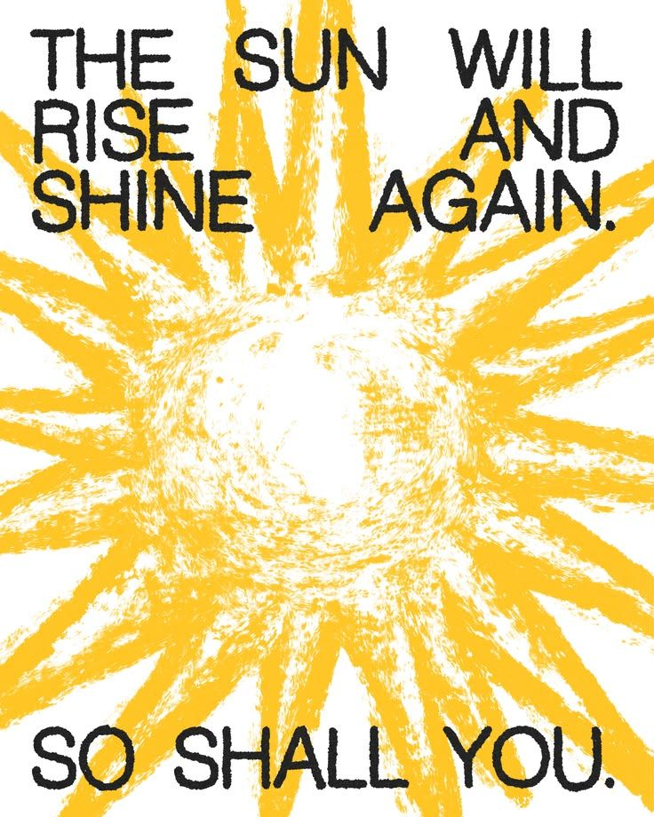

¡HOLA! Soy Lisa ✿
Y este es mi blog donde podrás encontrar artículos sobre la productividad, mis tips de organización, todo sobre journaling, y másss.

Si te gusta todo sobre lifestyle, organización, manifestación, encontrar nuevos hobbies y cómo sobrellevar una vida adulta joven, este es tu sitio. ⋆˚꩜｡
